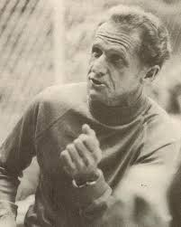

Padre del entrenamiento moderno de atletismo
2025-10-24
Hasta mediados del siglo XX, el entrenamiento en atletismo era empírico, limitado y a menudo erróneo:
Gracias a Arthur Lydiard, el atletismo dejó de basarse en estos conceptos para convertirse en una disciplina guiada por la ciencia y la planificación.
Datos personales:
Inicios deportivos:

Método científico autodidacta:
Los “Auckland Boys” (años 50-60):
Fruto de su conocimiento del contexto atlético de la época y de la observación de sus propios datos, hizo una propuesta de entrenamiento que rompía con todas las líneas de lo que se venía haciendo.
Caractersíticas de su propuesta:
Entrenamiento periodizado: no se hacía lo mismo durante todo el año. Las cargas variaban según el momento de la temporada para conseguir el pico de forma en la competición más importante.
Consideración de intensidades: se usaban diferentes intensidades según el periodo de entrenamiento y el objetivo fisiológico perseguido.
Aumento de kilómetros semanales: 30 kilómetros a la semana eran demasiado pocos.
Propuesta:
Periodo 1: base aeróbica. Se hacían carreras continuas hasta llegar a los 160 kilómetros semanales. Era muy inflexible en este aspecto.
Periodo 2: desarrollo anaeróbico. Se reducía el volumen y aumentaba la intensidad. Entrenaban en cuestas y la intensidad era próxima o igual a la velocidad máxima.
Periodo 3: puesta a punto. Entrenaban en pista con series de 400 metros a la velocidad de prueba. Se combinaban días fuertes con días suaves.
CLAVE: Durante los periodos de desarrollo anaeróbico y puesta a punto se seguían incluyendo días de carrera continua de hasta 30 kilómetros.
El volumen es alto en los primeros periodos de la planificación deportiva y va bajando según se acerca el momento de la competición.
La intensidad es muy baja en el primer periodo y va subiendo progresivamente a medida que avanza la temporada.
Destaca que en ninguno de los tres periodos el volumen llega a estar tan bajo como la intensidad, lo que significa que siempre hay una base de entrenamiento aeróbico.
El volumen y la intensidad bajan en el periodo de transición porque es el momento de descanso para volver a empezar.
“Few coaches have had more impact on endurance training practices than Arthur Lydiard.”
— John Hawley (2003)
En los años 70, Peter Coe, ingeniero y entrenador, reinterpretó los principios de Arthur Lydiard para crear un método más científico y cuantificable. Buscaba combinar la intuición del entrenamiento con la precisión de la fisiología.
De Lydiard mantuvo:
La importancia de una base aeróbica sólida.
La estructura de fases (resistencia → fuerza → velocidad).
Pero innovó en:
Controlar variables como el lactato, la frecuencia cardíaca y la velocidad de umbral.
Introducir una planificación científica y seguimiento cuantitativo del rendimiento.
El resultado fue visible: Sebastian Coe, doble campeón olímpico, entrenó bajo un sistema que combinaba tradición, ciencia y datos, redefiniendo el rendimiento de élite.
Arthur Lydiard supo interpretar sus datos de entrenamiento y su relación con las mejoras obervadas en el rendimiento.
Junto con su comprensión del contexto de las ciencias del entrenamiento de su época, consiguió:
Aplicar el análisis de datos al entrenamiento de resistencia.
Introducir métodos que hoy son la base de una correcta planificación deportiva.
Llegar a conclusiones que estudios actuales siguen corroborando.
Medallas en los JJOO.
Noakes, T. D. (2003). Lore of Running (4th ed.). Human Kinetics. Champaign, IL.
Calvo, M. (2020). Arthur Lydiard, el padre del entrenamiento moderno. Soy Corredor. https://www.soycorredor.es/atletismo/arthur-lydiard-padre-entrenamiento-moderno_49038_102.html
Wikipedia contributors. (2025). Arthur Lydiard. Wikipedia, The Free Encyclopedia. https://en.wikipedia.org/wiki/Arthur_Lydiard
ESPN Deportes. Historias de vida: Arthur Lydiard. https://espndeportes.espn.com/espn-run/nota/_/id/3751897/historias-de-vida-arthur-lydiard
EFDeportes. (2012). Periodización inversa en el entrenamiento deportivo actual. EFDeportes. https://www.efdeportes.com/efd165/periodizacion-inversa-en-el-entrenamiento-deportivo.htm
Wikipedia contributors. (2025). Peter Coe. Wikipedia, The Free Encyclopedia. https://en.wikipedia.org/wiki/Peter_Coe
John Hawley (2003). Arthur Lydiard. TrainGain. https://sportsci.org/news/traingain/lydiard.html
Introducción al Sports Analytics - MUSA